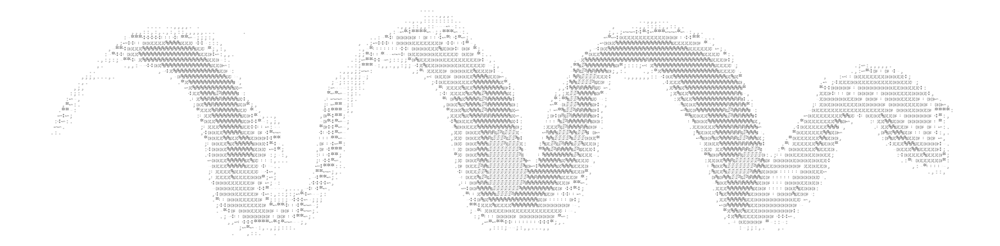

- Hutchinson Synthesis: Parametric Additive Synthesis via Probabilistic Distributions over the N-Dimensional Hypervolume of Time, Frequency, Amplitude and Spatial Direction in HOA (2026) — accepted, paper, i3DA 2026 — co-authored with Nicoletta Andreuccetti
- Four Routes Through Hyperspace: Wavetable Navigation Strategies via Givens Rotations (2026) — accepted, short paper, ICSC 2026, October 2026 — co-authored with Luca Bimbi and Giuseppe Silvi
- Memory as Transformation: LETHE, a Self-Referential GAN-Inspired Architecture (2026) — accepted, paper, CIM 2026, October 2026 — co-authored with Francesco Vitucci and Francesco Scagliola; Conservatorio di Musica “N. Piccinni”, Bari
- Opening mind by opening architecture: analysis strategies (2024) — paper, ICSC 2024, Vienna — co-authored with Francesco Vitucci, Giuseppe Silvi, Daniele Annese and Francesco Scagliola; corresponding author: Anthony Di Furia
- Archeotopologie: implementazione critica di memorie senza colore (2024) — paper, CIM 2024, Torino — co-authored with Daniele Annese, Francesco Vitucci, Francesco Scagliola and Giuseppe Silvi; corresponding author: Giuseppe Silvi
- Fragments of Extinction — A New Recording Approach in Primary Equatorial Forests (2014) — paper, Ecology & Acoustics: Emergent Properties from Community to Landscape, Muséum national d’Histoire naturelle, Paris — co-authored with David Monacchi, Ulmar Grafe and Almo Farina; corresponding author: David Monacchi. Role: developed the 3rd-order ambisonics spatial-filter software and built the species catalogue from its analysis

A cross-section of ambisonics work — compositions, software and research — spanning first- to seventh-order Higher Order Ambisonics (HOA). Each line links to its full entry.
- Hutchinson Synthesis (2026, paper, i3DA 2026) — 7th-order HOA spatialization
- Spherical Delay (2020, Sonosfera®) — delay on spherical harmonics, up to 7th-order
- SBAS — Steel Bar Ambisonics Synthesizer (2023) — 6th-order
- Ambisonics Soundscape Composition Tools (2020, Sonosfera®) — frequency/time morphing, up to 6th-order
- Spaziografo & Spaziogramma (2019–2020, Sonosfera®) — 24K spatial visualization of ambisonic sound sources
- Piano Selvatico (2016) — ambisonics residency, installation and performance
- Beyond the Human Atom (2014) — ambisonic manipulation, gestural control via ECG and Leap Motion
- Osservazioni del vento dell’aria della terra e della volta celeste (2014) — 3rd-order
- Fragments of Extinction — A New Recording Approach (2014, paper) — 3rd-order spatial-filter software
- Lampi sull’Eni (2016) — ambisonic/binaural environment simulation
- Binaural playback management (2016, Sonosfera®) — ambisonics→binaural conversion
- Through the space of crying (2014) — 1st-order
- De Divina Proportione (2011) — 1st-order spatialization assistance
Compositions, sound installations and sound design for theatre, dance and film, 2011–2024.
- Female Child System — Imprisonment (2023–2024) — composition for 6th-order ambisonics based on the physical model of a steel bar; software:
- Lo stato del disordine delle cose (2024) — Electric Sound 2024, Auditorium Nino Rota, Conservatorio N. Piccinni, Bari
- Ninna Nanna Primitiva (2023) — Pietre che cantano, Rassegna di Musica Acusmatica, Monastero di Fonte Avellana, Serra Sant’Abbondio
- Chimica e Musica in viaggio con Dante (2022, Torino) — electroacoustic composition and sonification: a chemical reading of the Divine Comedy — Teatro e Scienza Festival “Orientare i Giovani”, Villa Tesoriera
- Il limite della simbiosi (The Limit of Symbiosis) (2017) — soundscape composition: field recording, software development, mixing and mastering by Anthony Di Furia; software: — CD, rad’art (San Romano, Italy) / La Chambre Blanche (Québec, Canada)
- Scultura 21 — “Lo spazio in ascolto. La voce della scultura” (2021, Pesaro) — performance/concert with Alessandro Petrolati and Claudio Rastelli, WunderKammer Orchestra, on Giuliano Vangi’s sculpture “Scultura della Memoria”, Piazza Mosca
- Casella 17 (2019, Roma Fringe Festival) — electroacoustic composition and sound manipulation software for the theatrical piece, dir. Diana Ripani
- L’albero dell’asilo (2019, Pesaro) — electroacoustic installation/concert “Monofonico”, geophony/biophony synthesis; Chiesa Annunziata, Pesaro Art Festival
- Dusk Chorus (2017) — sound design for the film based on fragments of extinction by David Monacchi, dir. Nika Saravanja & Alessandro D’Emilia, winner of several international festival awards; software:
- Ken è morto (2017, Carrozzerie N.O.T., Rome, dir. Diana Ripani) — composition and live electronics; software:
- La perdita (2016–2017, Teatro Mediterraneo Occupato, Palermo; PalaFolli, Ascoli Piceno; dir. Diana Ripani) — electroacoustic composition with ad-hoc resonant-filter software for water-sound textures
- Lampi sull’Eni (2016, Liquidi Volumi — Young Composers, Piazza Tevere, Rome, TeverEterno) — multichannel electroacoustic composition: granular synthesis and amplitude modulation on manipulated voice; software:
- Piano Selvatico (2016, artist residency & installation, Pianpicollo Selvatico, Levice, Cuneo) — field recording, software development, electroacoustic composition and sound installation; software: ,
- Ananke (2015) — music and sound design for the film by Claudio Romano (Arcopinto / Kio Film / Minimal Cinema): synthetic sounds standing in for concrete ones (crickets, wind, rain, fire)
- Beyond the Human Atom (2014, artist residency, La Chambre Blanche, Québec, Canada) — ambisonic sound-manipulation and spatialization installation, gestural control via ECG and Leap Motion; software:
- Through the space of crying (2014, Linux Audio Conference, ZKM Cube, Karlsruhe, Germany) — electroacoustic composition/improvisation inspired by tin as a chemical element; software:
- Osservazioni del vento dell’aria della terra e della volta celeste (2014, Pesaro, Hangartfest) — electroacoustic composition for contemporary dance built from a single mechanical sound recorded at the Pesaro Observatory, conceived by Roberto Vecchiarelli and Eugenio Giordani
- Meteophonie (2013, Pesaro, Conservatorio Rossini) — sonification and live electronics, installation/performance in quadraphony on weather data; conceived by Eugenio Giordani, performed with Stefano Vinciarelli and Niccolò Di Gregorio
- La Fuga (2013, Festival Ville e Castella, Pesaro-Urbino) — electroacoustic theatrical adaptation of Gao Xingjian’s novel, performed in the presence of the Nobel-laureate author; software:
- Soundwalk — Percorsi Cittadini (2012–2013, Pesaro, Conservatorio Rossini) — binaural field recording and guided soundwalks, conceived by Eugenio Giordani, with Stefano Vinciarelli and Niccolò Di Gregorio
- Erratica #1 (2012, Conservatorio Rossini, Pesaro) — sound installation, ad-hoc Csound synthesis, with Stefano Vinciarelli and Niccolò Di Gregorio, supervised by Eugenio Giordani
- Erratica #2 — Carta bianca (2012–2013, Parco Ranghiasci, Gubbio) — sound installation, subtractive synthesis on recorded paper sounds, with Stefano Vinciarelli
- Salomè (Oscar Wilde) (2012, Teatro di Fano; music/sound direction: David Monacchi) — live electronics; software:
- Bestiario filologico e fantastico (2011–2012, Ente Olivieri, Pesaro, with Ermanno Cavazzoni) — conference-performance, software development supervised by Eugenio Giordani, real-time manipulation of a spatialized (quadraphonic) baritone sax; software:
- De Divina Proportione (2011, Simone Sorini & David Monacchi, inspired by Luca Pacioli, Conservatorio Rossini — Progetto Orfeo) — 1st-order ambisonic spatialization assistance and binaural recording
- Vai a vedere i gorilla (2011, Accademia di Belle Arti di Brera, Milan; by Gabriele Freytag, dir. Giovanni Ferri) — field recording, digital sound editing and software development for the theatrical review
- DIALOGUE (2011, Scambi Microfestival Contemporaneo, Torricella di Fossombrone) — electroacoustic composition, programming and live electronics with the group DIALOGUE; ad-hoc granular-synthesis software built from a single sine wave
- URLO — Urbino Laptop Orchestra (2011) — live electronics and software development for several concerts and micro-festivals (Fossombrone, Furlo, Fabriano), directed by Alessandro Petrolati; software:
- La bellezza salverà il mondo — readings from Melville’s Moby Dick (2010, Fano) — field recording, digital audio editing, sound design and Csound programming for the theatrical reading
- Orecchio alla terra (2010, LEMS, Conservatorio G. Rossini, Pesaro) — field recording of a soundwalk with Hildegard Westerkamp; sound art / video art / music / ecology programme
Recording, mixing, mastering and live sound engineering for other artists and ensembles.
- The Stuff Is Here — Peppers and the Jellies (2019) — recording, mixing, mastering
- L’Equilibrio dei Numeri Primi — Metanoia (2019) — recording, mixing, mastering — Artis Records / Cramps Music
- Nel Vivo — Camilla Dell’Agnola & Valentina Turrini (2018) — field recording & editing (A. Di Furia); mixing/mastering/supervision (D. Monacchi) — TUTL, Faroe Islands
- Sinfonico — Paolo Di Sabatino, Daniele Mencarelli, Glauco Di Sabatino & Orchestra Sinfonica Abruzzese (2018) — mixing, mastering — Incipit
- Trii — V. Ferroni / R. Zandonai; L. Venturi, I. Scarponi, M. Venturi (2017) — multitrack recording assistant & full edit, for David Monacchi — Teatro di Todi; Discantica (CD + vinyl)
- The Place Between Things — Jano (2017) — sound design, composition, recording, mixing, mastering — Via Veneto Jazz
- Baadaye Pinocchio d’Africa — Paolo Di Sabatino (2017) — mixing, mastering
- Trace Elements: Electric Trip (Live in Teramo Again) — Di Sabatino / Galvez / Chambers (2016) — recording, mixing, mastering — Nicolosi Distribution
- Sinking Lads — EcP (2016) — recording, mixing, mastering
- The Warm Feeling of Cold — Alex Paolini (2013) — sound design, composition, recording, mixing, mastering
- Live sound engineering — PA installation and FOH engineering for 35+ live events (2018–2020) across central Italy, including multi-day festivals (FranticFest, Festival del Saltarello), the Nova Amadeus Symphony Orchestra, and artists such as Giovanni Truppi, Mr. Rain and Rosalia De Souza; technical supervision and composer support at ICSC 2019 (5th International Csound Conference, Cagli)
- Sound technician — eco-acoustic concerts by David Monacchi & Walter Branchi (Udine, Trieste, 2011)